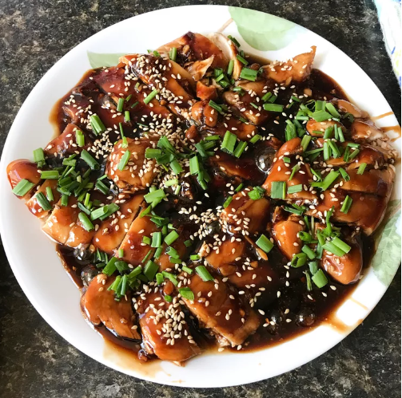

Chicken Teriyaki

Description
Teriyaki chicken is a Japanese dish with teriyaki sauce. The sauce is made by mixing and heating soy sauce, sake, or mirin; and sugar (or honey or corn syrup) until it thickens. The word teriyaki derives from the noun teri (照り), which refers to a shine or luster given by the sugar content in the tare (タレ), and yaki (焼き), which refers to the cooking method of grilling or broiling.
Ingredients
- 2 tablespoons cornstarch
- 2 tablespoons water
- 1 cup low-sodium soy sauce
- ½ cup white sugar
- ¼ cup mirin (Japanese sweet wine)
- 4 teaspoons grated fresh ginger
- 3 cloves garlic, minced
- ¼ teaspoon red pepper flakes
- 4 skinless, boneless chicken breast halves
Steps
- Preheat oven to 400 degrees F (200 degrees C).
- Whisk cornstarch and water together in a small bowl until dissolved; set aside. Combine soy sauce, sugar, mirin, ginger, garlic, and red pepper flakes together in a saucepan over medium heat until the mixture starts to simmer. Slowly whisk in cornstarch mixture. Bring to a boil; reduce heat to medium-low, and simmer until thickened, stirring often, about 10 minutes.
- Pat chicken dry with paper towels; arrange in a baking dish. Pour sauce over chicken breasts, coating all sides.
- Bake chicken breasts in the preheated oven until no longer pink in the center and the juices run clear, 25 to 30 minutes. An instant-read thermometer inserted into the center should read at least 165 degrees F (75 degrees C).